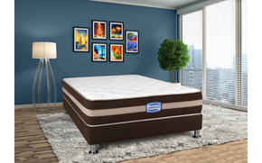
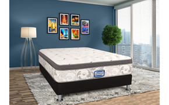
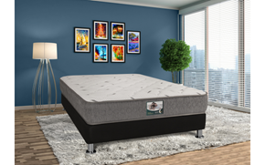
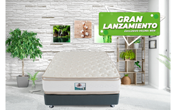
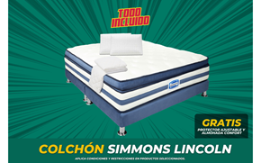
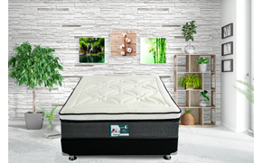
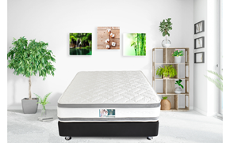
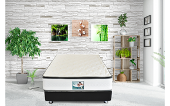
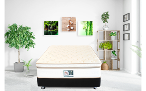

PRODUCTOS
COLCHON SIMMONS WALTON |
COLCHON SIMMONS GOLD |
COLCHON VENUS |
|  |  |  |
| El colchón Simmons ofrece un diseño clásico, contando con una combinación de tecnologías que le permitirá sentir una mayor sensación de firmeza | El colchón Simmons® Gold ofrece una capa de fibra de celdas abiertas penta top de mayor comodidad en la parte superior y cuenta con una composición que ofrece mayor suavidad al momento de dormir, sistema de resortes encapsule pocket, el cual inhibe el movimiento y soporte lateral gracias a su sitema de marco en foam encasedEncapsule pocket, fibra penta top, fibras de algodón | Unico del mercado con sistema exclusivo de resortes premium offset, brinda mayor soporte y firmeza, con una combinacion excepcional de fibras naturales para maximizar el nivel de dureza, linea clinica.Premium Offset, fibras de algodón, fibras naturales, sistema ultrasonido |
COLCHON MEMOREX TOP |
COLCHON SIMMONS LINCOLN |
COLCHON VENUS TOP |
|  |  |  |
| El colchón Memorex Top cuenta con una capa de memory Eucavisco® con sistema Cool intelligent , por su composición es firme y brinda mayor soporte. Sistema movimiento independiente. La espuma visco inteligente de Europa; distribuye de mejor manera la temperatura y peso corporal, permitiendo que duermas con una mayor sensación de suavidad, beneficiándote igualmente con un buen soporte, haciendo que tu descanso sea mas placentero y relajante. | "El colchón Simmons® Lincoln Super Pillow Top ofrece una capa extra dememory Eucavisco® con sistema Cool intelligent para brindar mayor confort al momento de dormir Es la primer espuma inteligente de europa la cual distribuye de mejor manera la temperatura y peso corporal lo cual permite que duerma con una mayor sensación de suavidad e ingravidez, beneficiándose igualmente con un buen soporte, unico con tela Cool Sensation la cual mejora la termoregulacion de la temperatura en el cuerpo gracias a sus microparticulas de gel.Encapsule pocket, Intelligent foam Eucavisco®, cool intelligent, Super cool sensation gel microparticles" | El colchón Venus Pillow Top ofrece una capa de fibra de celdas abiertas penta top de mayor comodidad en la parte superior y cuenta con una composición que ofrece mayor suavidad al momento de dormir, sistema de resortes encapsule pocket, el cual inhibe el movimiento y soporte lateral gracias a su sitema de marco en foam encasedEncapsule pocket, fibra penta top, fibras de algodón |
COLCHON URANO TOP> |
COLCHON SATURNO TOP |
COLCHON MEMOREX UNITOP> |
|  |  |  |
| Balance de firmeza y confort, gracias a su sitema de pillow interno, mejora la posicion de la columna y disminuye los puntos de precionFibra de algodón y sistema ultrasonido | Sistema gold pillow el cual brinda mayor comodidad al descansar gracias a su sistema en V el cual se adapta al cuerpo para brindar el soporte ideal para tu descanso Fibra de algodón y sistema ultrasonido | "El colchón Memorex Unitop cuenta con una capa de memory Eucavisco® con sistema Cool intelligent , por su composición es firme y brinda mayor soporte Es la primer espuma viscointeligente de europa, la cual distribuye de mejor manera la temperatura y peso corporal, lo cual permite que usted duerma con una mayor sensación de suavidad, beneficiándose igualmente con un buen soporte, exclusiva tela con estractos de Valeriana, los cuales permiten que su descanso sea mas placentero y relajante.Encapsule pocket, Intelligent foam Eucavisco®, cool intelligent, estractos de valeriana " |

Ubicacion
Frontera del Descanso
Telefono: 3203719925 - 7581620
E-Mail: fronteradeldescanso@gmail.com
Carrera 107c # 70-89
Bosques de Mariana
Bogota DC